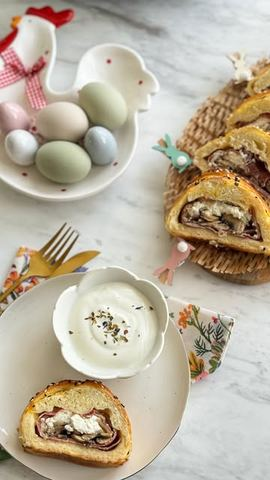

Moja beleška
Sačuvano
Ocena
Sastojci
- Sastojci
Priprema
Potrebno je pečurke fino oprati, iseckati i prodinstati na malo maslinovog ulja. Mrvicu ih začinite pošto je pršuta dosta slana. Na sredini kvasnog testa poredjati prvo pršutu, zatim pečurke, preko sir po ukusu, pa to punjenje nekako ušuškati u pršutu kako biste mogli da isecete testo na trakice. Naizmenično preklapajućih delove testa, urolamo ovaj fini rolat. Premažamo umućenim jajetom i pospemo susam po ukusu. Peče se 20ak minuta u zagrejanoj rerni na 200C. Možete naravno ovo isprobati i u lisnatom testu, ali je ova varijanta kao da ste sami maesili testo 😍
Originalni opis sa Instagrama
Slani rolat 🌸 Legenda kaže da se ovakvo parčence ne odbija 😍 Testo punjeno njeguškim pršutom, dinstanim pečurkama i sirom, idealan predlog za serviranje i degustaciju za predstojeći praznik 💓💓 Zanimljivo je i to da kvasno testo ne morate vi mesiti ako ste u žurbi i onda zaista za čas posla imate spreman rolat 🙌🏻 Sastojci: •1 kvasno testo •100 gr njeguške pršute •200 gr pečuraka •kašika maslinovog ulja, malo soli, bibera •100 gr sira po ukusu •1 jaje za premazivanje •susam Potrebno je pečurke fino oprati, iseckati i prodinstati na malo maslinovog ulja. Mrvicu ih začinite pošto je pršuta dosta slana. Na sredini kvasnog testa poredjati prvo pršutu, zatim pečurke, preko sir po ukusu, pa to punjenje nekako ušuškati u pršutu kako biste mogli da isecete testo na trakice. Naizmenično preklapajućih delove testa, urolamo ovaj fini rolat. Premažamo umućenim jajetom i pospemo susam po ukusu. Peče se 20ak minuta u zagrejanoj rerni na 200C. Možete naravno ovo isprobati i u lisnatom testu, ali je ova varijanta kao da ste sami maesili testo 😍 Sjajna ideja, zar ne..? • • • #rolat #slanirolat #idejezapripremu #recept #ukusnahrana #brzoilako #ukusnirecepti #uskršnječarolije #uskršnjeposluženje